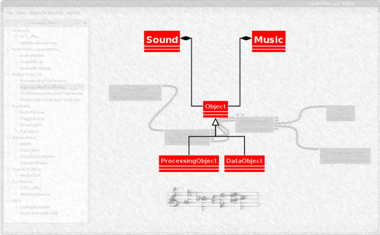

Everything in this website is licensed under a Creative Commons Attribution2.5 License unless stated otherwise.
From Barcelona to the Valley...
always on the red pill
I am a Computer Science researcher, manager, and technology geek. I am best known for my work on Recommender Systems and Machine Learning, but I have also worked on Multimedia and Signal Processing in the past (see my Publications for more details). I am currently leading Engineerng at Quora. I have a PhD on Computer Science and a degree in Telecommunications Engineering (roughly equivalent to ECE in the US). Before Quora, I was Research/Engineering Director at Netflix, where I led the Algorithms team in charge of the famous Netflix recommendations. In my previous lives I worked at Telefonica Research and also spent two years at UCSB working as the Technical Director of the Allosphere project (See my LinkedIn profile for more details on my positions).
I now live in Los Gatos, CA, with my wife Natalia and our two wonderful children Aitor and Adriana. I am originally from Barcelona, and I am a big F.C. Barcelona fan.


I am currently VP of Engineering at Quora, where I lead the Engineering team that is working on growing and sharing knowledge in the world.
Previously, I was Research/Engineering Director at Netflix where I led the Algorithms Engineering team. My technical area of expertise is on Machine Learning, Information Retrieval, Recommender Systems, and User Modeling.
Before that, I was a Senior Research Scientist in Telefonica Research Barcelona.
Years before that, I was Associate Director for the Media Arts and Technology Initiatives (MATi) at the University of California Santa Barbara and Research Director of the CREATE research center at that same university.
As MATi's Associate Director my main mandate was to organize the multimedia research community around the Allosphere.
I created and led the development of the CLAM framework for some time after my PhD. I am no longer active on the project.
Click here for a complete list of student projects I have directed.
You can download a pdf version of my CV here or you can access my LinkedIn profile.
I am VP of Engineering at Quora where I lead an awesome engineering team. Previous to that, I was a Research/Engineer Director for the Algorithms Engineering team at Netflix. I enjoy working on complex problems in
the cross-roads of machine learning, software engineering, and team management.
I have extensive research and management background of more than 10 years.
I have authored more than 50 publications and hold several patents.
I am interested on research management, software development and agile methodologies. I am the main proponent of the Agile Research Method
As a university professor I have experience in teaching Software Engineering,
Information Retrieval, and many different courses related to Multimedia and Music.

Although I started studying music when I was quite
little, I did not take it seriously until I was 15. As a teenager I played in a number
of bands the most successful of which was the Maijalas.
Carles Lloveras, Xavi Palou, Ramon Valls and I created the Maijalas
band. The idea was to mix rock with more latin rithms (nowadays I know
that is very common but not so much at that time). Maijalas got to record a demo tape and a CD. We
broke up when we were preparing our second CD. Here you have a few
samples from our first CD:
Cámbiamela
A Media Tarde
A Tu Vera
Hijo del Miedo
Deixant-te Estar
I have also done quite a few computer based compositions. Unfortunately because of a severe lack of time in the past few years none of them have made it to a stage in which I would be comfortable sharing them. I have done compositions using MetriX (the language I developed), CSound, CLAM and Pd.
You can visit my lastfm profile.
A couple of years ago, I decided to start running with the goal of sometime running a half-marathon. Now I am completely hooked into running. This year I have run more halfs than I care to count and 5 full marathons with a personal best of 3:24 in St. George (Utah). I can now say that running is an important part of my everyday life. If you are a runner, or thinking about it, you might enjoy my blog post on "10 'Little' lessons for life that I learned from running". You can also follow me on Strava or Runkeeper.
I like classical movies like The Godfather or Citizen Cane but my favourite
films are a bit more "off-mainstream". I would recommend any film
by Jim Jarmush (including Down by Law or Night On Earth), the first films
by Gus Van Sant (My Own Private Idaho) and some by Kevin Smith (Clerks or
Chasing Amy).
See my Flixter profile.
Although I must admit that nowadays I do it much less than I would like - and when
I do it is mainly to read technichal books - reading is still one of my
favourite activities. You can follow me on Goodreads.
I could make a long list of favourite books and authors but I will try to
concentrate on those that most have influenced me. The first book I remember
as having influenced me as a child is Michael Ende's Momo (which I found
much more impressive/depressive than his famous Never-ending Story). I was quite a
lot into J.R.R. Tolkien at that time also.
I really read a lot while I was a child and still did the same as a teenager.
During that age I read some impressive books that I still like: any
book by Boris Vian is highly recommendable, Tropic of Cancer by Henry Miller,
most of Garcia Marquez', some of William Burroughs... (when I was 18 I even read
Joyce's Ulyses and even finished it!).
Here you will find a rather unsorted and incomplete list of links related to me.
My Quora profile
My Blog
My Twitter Account
My LinkedIn Profile
My Google Scholar page
My Slideshare
Netflix Techblog
CLAM
The Allosphere
MAT at UCSB
The MTG at UPF